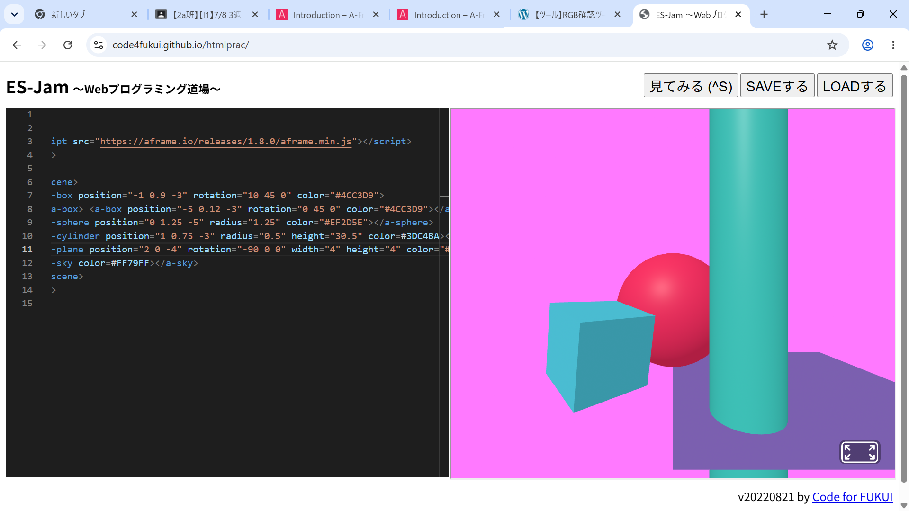
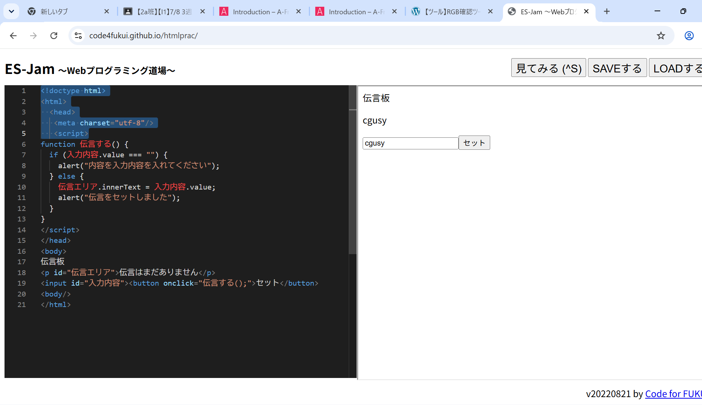

３週目のレポート ： 公大高専１年実習I-1
2a班07番 <大森
第3週目
3-1 JavaScript体験：VR空間を作る

自作した３次元空間
1.内容
プロジェクトを動かすうえで先週やったスクラッチ体験とは違って、構成もしっかりあった。３ｄの中の物体の色を変えたり座標を変えたりした。・
2.感想 内容は前回よりも難しくなったと最初に感じたが、そのあとにコツをつかむと楽しくできたし、少しだけ色うぃじったり座標を変えるなどの プログラムをできるようになって、感動している。
3-2 JavaScript体験：伝言プログラムを作る

伝言板
1.内容
伝言板のプログラムを最初から作った。作るうえでヘッドやボディーの意味や能力などを学んだ。プログラムは使う人の応じて帰ると知った。
2.感想
まだはじめてプログラムを本格的にしたので見様見真似でしかできなかったが各パーツの意味を理解できてよかった。そして自分でまた作りたいと思った。
各ページへのリンク
1週目のレポート
2週目のレポート
3週目のレポート
私のホームページ